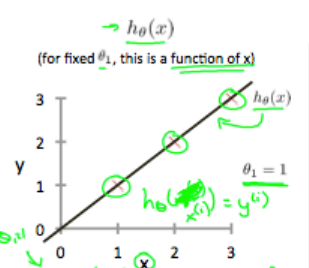

Cost Function- Intuition I.
Lets visualize the terms,
Our training data set is scattered on the x-y plane.
We are trying to make a straight line (defined by hθ(x)) which passes through these scattered data points

Our objective is to get best possible line.
The best possible line will be such so that the average squared vertical distances of the scattered points from the line will be the least
Ideally, the lines should pass through all the points of our training data set. In such a case, the value of J(θ0, θ1) will be 0.
When θ1= 1, we get slope of 1 which goes through every single data point in our model.
Conversely, when θ1 = 0.5, we see the vertical distance from our fit to the data points increase.

This increases our cost function to 0.58. Plotting several other points yields to the following graph.
 Thus as a goal, we should try to minimize the cost function. In this case, θ1 = 1 is our global minimum
Thus as a goal, we should try to minimize the cost function. In this case, θ1 = 1 is our global minimum